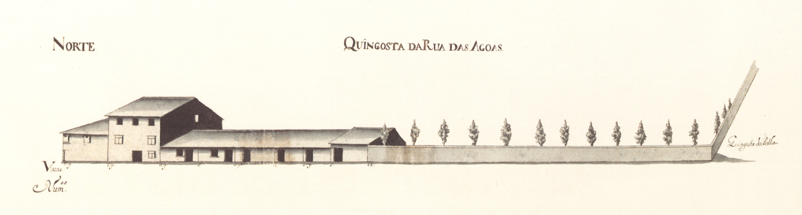

60 |
Cangosta da Rua das Águas |
|  Cangosta da Rua das Águas - norte. |
Pequena artéria que partindo da rua das Águas passava pela quingosta da Palha e de dirigia ao Campo de Nossa Senhora a Branca. No volume 2, dos Índices das Casas dos Prazos do Cabido, a páginas 273-278 é chamada Cangosta Que Vai Para Nossa Senhora a Branca.
No Mappa não há, porém, indicações de que estes edifícios sejam foreiros ao Cabido, o que cintraria os Índices.
A 7 casas que vemos no Mappa são bastante simples, pobres até, de arquitetura tradicional. Seis são térreas e uma tem três pisos, sendo o último andar, contudo, mais baixo e de mais pequenas aberturas.
Em 1891 a Câmara decidiu fazer um pequeno largo (o Rechicho) no seu extremo Oeste e alargá-la.
Atual rua do Raio e largo João Penha (ou do Rechicho).
| Número | Enfiteuta | Foro | Descrição |
| 37 a 42 | *Vid.casa nº33 da Rua das Águas (rua 36) | A numeração que lhe é atribuída pelos índices dá seguimento à da rua das Águas. A casa nº37 confronta, de poente, com o nº36 da rua das Águas. |